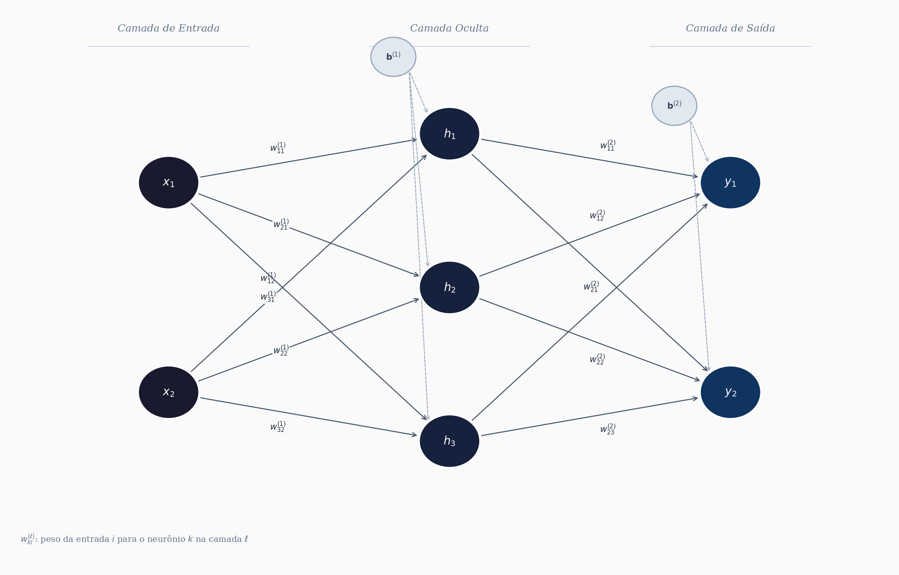
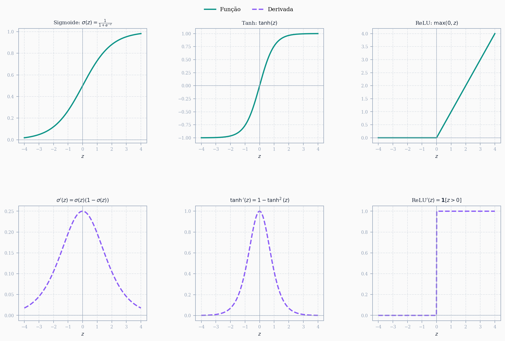

Introdução
Redes neurais sempre me pareceram um daqueles temas que a gente visita várias vezes (forward pass, funções de ativação, neurônios, backpropagation) mas que só “clicam” de verdade quando paramos pra entender por que as coisas são feitas daquele jeito. No meu caso, o ponto que mais resistia era o backpropagation: por que derivadas parciais da função custo? Por que aquela cadeia toda de regras de derivação?
Decidi então construir o entendimento do zero, de forma incremental:
- Primeiro, o conceito básico: o que é uma rede neural, sem formalismos pesados.
- Depois, como minimizar uma função custo (a intuição por trás do gradiente).
- Por fim, a forma matricial completa: forward pass, backpropagation e atualização de pesos.
Vou começar com uma rede de uma camada oculta para manter a didática simples, mas o objetivo é generalizar para um número qualquer de camadas e neurônios.
Pré-requisito: alguma familiaridade com derivadas na forma matricial, já que vamos trabalhar diretamente com a representação matricial da rede.
O que é uma rede neural: entradas, saídas, neurônios, camadas ocultas e funções de ativação
Uma rede neural é basicamente um modelo matemático que recebe um vetor de entrada \(\mathbf{x} \in \mathbb{R}^p\) e produz um vetor de saída \(\mathbf{y} \in \mathbb{R}^q\). Entre a entrada e a saída existem transformações sucessivas que envolvem operações lineares (multiplicação por matrizes de pesos) seguidas de funções não-lineares. É essa combinação que dá à rede a capacidade de aproximar relações complexas.
Neurônio
O neurônio é a unidade fundamental. Ele recebe \(p\) entradas, multiplica cada uma por um peso \(w_j\), soma tudo (incluindo um termo de bias \(b\)) e aplica uma função de ativação \(\varphi(\cdot)\):
\[ y = \varphi\left(\sum_{j=1}^{p} w_j x_j + b\right) = \varphi(\mathbf{w}^T \mathbf{x} + b) \]
A parte \(\mathbf{w}^T \mathbf{x} + b\) é chamada de ativação (ou pré-ativação). A função \(\varphi\) introduz a não-linearidade que permite à rede modelar relações que vão além de combinações lineares.
Camadas
Quando agrupamos vários neurônios que recebem as mesmas entradas, temos uma camada. Uma rede neural típica é organizada em:
- Camada de entrada: não faz processamento, apenas repassa os dados. Se temos \(p\) variáveis de entrada, essa camada tem \(p\) nós.
- Camadas ocultas: aqui acontece o processamento. Cada camada oculta tem \(n_h\) neurônios que recebem as saídas da camada anterior, aplicam pesos + bias + ativação, e passam o resultado pra frente.
- Camada de saída: produz a resposta final da rede. Se queremos classificar em \(q\) classes, teremos \(q\) neurônios nessa camada.
Para uma rede com uma camada oculta de \(n_h\) neurônios, as operações são:
\[ \mathbf{h} = \varphi(\mathbf{W}^{(1)} \mathbf{x} + \mathbf{b}^{(1)}) \]
\[ \mathbf{y} = \psi(\mathbf{W}^{(2)} \mathbf{h} + \mathbf{b}^{(2)}) \]
onde \(\mathbf{W}^{(1)}\) é a matriz de pesos da primeira camada (dimensão \(n_h \times p\)), \(\mathbf{W}^{(2)}\) é a da segunda (dimensão \(q \times n_h\)), e \(\varphi\), \(\psi\) são as funções de ativação de cada camada.
Funções de ativação
A escolha da função de ativação importa bastante. As mais comuns são:
- Sigmoide: \(\sigma(z) = \frac{1}{1 + e^{-z}}\), saída entre 0 e 1. Historicamente popular, mas sofre de gradientes que “somem” nas extremidades.
- Tanh: \(\tanh(z) = \frac{e^z - e^{-z}}{e^z + e^{-z}}\), saída entre -1 e 1. Centrada em zero, o que ajuda no treinamento.
- ReLU: \(\text{ReLU}(z) = \max(0, z)\). Simples, computacionalmente barata e resolve em parte o problema do gradiente que desaparece. É a mais usada em redes profundas hoje.
- Softmax: usada na camada de saída para problemas de classificação multiclasse. Transforma o vetor de ativações em probabilidades que somam 1.
Por que funciona?
A intuição é a seguinte: cada camada da rede aplica uma transformação nos dados. A primeira camada pode aprender a detectar padrões simples (fronteiras lineares). A segunda combina esses padrões pra formar representações mais abstratas. E assim por diante. Existe inclusive um teorema (Universal Approximation Theorem) que garante que uma rede com pelo menos uma camada oculta e um número suficiente de neurônios pode aproximar qualquer função contínua num domínio compacto, dado que os pesos sejam ajustados corretamente.
O problema todo se resume a: como ajustar esses pesos? É aí que entram a função custo, o gradiente descendente e o backpropagation, que veremos nas próximas seções.
Exemplo: rede com 1 camada oculta
Vamos tornar isso concreto. Considere uma rede com 2 entradas (\(x_1, x_2\)), 3 neurônios na camada oculta (\(h_1, h_2, h_3\)) e 2 saídas (\(y_1, y_2\)). A arquitetura fica assim:

Forma matricial: camada oculta
O vetor de entrada é \(\mathbf{x} = [x_1, x_2]^T\). A matriz de pesos da primeira camada \(\mathbf{W}^{(1)}\) tem dimensão \(3 \times 2\) (3 neurônios, 2 entradas) e o vetor de bias \(\mathbf{b}^{(1)} \in \mathbb{R}^3\):
\[ \mathbf{W}^{(1)} = \begin{bmatrix} w_{11}^{(1)} & w_{12}^{(1)} \\ w_{21}^{(1)} & w_{22}^{(1)} \\ w_{31}^{(1)} & w_{32}^{(1)} \end{bmatrix}, \qquad \mathbf{b}^{(1)} = \begin{bmatrix} b_1^{(1)} \\ b_2^{(1)} \\ b_3^{(1)} \end{bmatrix} \]
A pré-ativação da camada oculta é:
\[ \mathbf{W}^{(1)}\mathbf{x} + \mathbf{b}^{(1)} = \begin{bmatrix} w_{11}^{(1)} & w_{12}^{(1)} \\ w_{21}^{(1)} & w_{22}^{(1)} \\ w_{31}^{(1)} & w_{32}^{(1)} \end{bmatrix} \begin{bmatrix} x_1 \\ x_2 \end{bmatrix} + \begin{bmatrix} b_1^{(1)} \\ b_2^{(1)} \\ b_3^{(1)} \end{bmatrix} = \begin{bmatrix} w_{11}^{(1)}x_1 + w_{12}^{(1)}x_2 + b_1^{(1)} \\ w_{21}^{(1)}x_1 + w_{22}^{(1)}x_2 + b_2^{(1)} \\ w_{31}^{(1)}x_1 + w_{32}^{(1)}x_2 + b_3^{(1)} \end{bmatrix} \]
Aplicando a função de ativação \(\varphi\) elemento a elemento:
\[ \mathbf{h} = \varphi\!\left(\mathbf{W}^{(1)}\mathbf{x} + \mathbf{b}^{(1)}\right) = \begin{bmatrix} h_1 \\ h_2 \\ h_3 \end{bmatrix} \]
Forma matricial: camada de saída
Agora \(\mathbf{h} \in \mathbb{R}^3\) é a entrada da segunda camada. A matriz de pesos \(\mathbf{W}^{(2)}\) tem dimensão \(2 \times 3\) e o bias \(\mathbf{b}^{(2)} \in \mathbb{R}^2\):
\[ \mathbf{W}^{(2)} = \begin{bmatrix} w_{11}^{(2)} & w_{12}^{(2)} & w_{13}^{(2)} \\ w_{21}^{(2)} & w_{22}^{(2)} & w_{23}^{(2)} \end{bmatrix}, \qquad \mathbf{b}^{(2)} = \begin{bmatrix} b_1^{(2)} \\ b_2^{(2)} \end{bmatrix} \]
A pré-ativação da camada de saída é:
\[ \mathbf{W}^{(2)}\mathbf{h} + \mathbf{b}^{(2)} = \begin{bmatrix} w_{11}^{(2)} & w_{12}^{(2)} & w_{13}^{(2)} \\ w_{21}^{(2)} & w_{22}^{(2)} & w_{23}^{(2)} \end{bmatrix} \begin{bmatrix} h_1 \\ h_2 \\ h_3 \end{bmatrix} + \begin{bmatrix} b_1^{(2)} \\ b_2^{(2)} \end{bmatrix} = \begin{bmatrix} w_{11}^{(2)}h_1 + w_{12}^{(2)}h_2 + w_{13}^{(2)}h_3 + b_1^{(2)} \\ w_{21}^{(2)}h_1 + w_{22}^{(2)}h_2 + w_{23}^{(2)}h_3 + b_2^{(2)} \end{bmatrix} \]
Aplicando a função de ativação de saída \(\psi\):
\[ \mathbf{y} = \psi\!\left(\mathbf{W}^{(2)}\mathbf{h} + \mathbf{b}^{(2)}\right) = \begin{bmatrix} y_1 \\ y_2 \end{bmatrix} \]
Resumo do forward pass
Juntando tudo, o fluxo completo de cálculo (forward pass) fica:
\[ \mathbf{x} \xrightarrow{\mathbf{W}^{(1)},\, \mathbf{b}^{(1)}} \mathbf{h} = \varphi\!\left(\mathbf{W}^{(1)}\mathbf{x} + \mathbf{b}^{(1)}\right) \xrightarrow{\mathbf{W}^{(2)},\, \mathbf{b}^{(2)}} \mathbf{y} = \psi\!\left(\mathbf{W}^{(2)}\mathbf{h} + \mathbf{b}^{(2)}\right) \]
O total de parâmetros ajustáveis nessa rede é: \(3 \times 2 + 3 + 2 \times 3 + 2 = 6 + 3 + 6 + 2 = 17\). Em redes profundas esse número cresce rapidamente, e é exatamente por isso que o backpropagation precisa ser eficiente.
Dimensões das matrizes de pesos
Entender as dimensões é provavelmente a parte mais prática para quem vai implementar uma rede. Um erro de dimensão mata o código antes mesmo de começar a treinar, então vale fixar a regra geral.
Para uma camada \(\ell\) qualquer, a regra é:
\[ \mathbf{W}^{(\ell)} \in \mathbb{R}^{n_\ell \times n_{\ell-1}} \]
onde \(n_{\ell-1}\) é o número de neurônios (ou entradas) da camada anterior e \(n_\ell\) é o número de neurônios da camada atual. O bias sempre acompanha: \(\mathbf{b}^{(\ell)} \in \mathbb{R}^{n_\ell}\).
A intuição é direta: cada linha de \(\mathbf{W}^{(\ell)}\) contém os pesos de um neurônio da camada \(\ell\), e esse neurônio precisa de um peso para cada entrada que recebe. Por isso o número de colunas é \(n_{\ell-1}\).
No nosso exemplo
| Camada | Operação | Dimensão de \(\mathbf{W}^{(\ell)}\) | Dimensão de \(\mathbf{b}^{(\ell)}\) | Dimensão da saída |
|---|---|---|---|---|
| 1 (oculta) | \(\mathbf{W}^{(1)}\mathbf{x} + \mathbf{b}^{(1)}\) | \(3 \times 2\) | \(3 \times 1\) | \(\mathbf{h} \in \mathbb{R}^3\) |
| 2 (saída) | \(\mathbf{W}^{(2)}\mathbf{h} + \mathbf{b}^{(2)}\) | \(2 \times 3\) | \(2 \times 1\) | \(\mathbf{y} \in \mathbb{R}^2\) |
Note que as dimensões se encaixam: o número de colunas de \(\mathbf{W}^{(\ell)}\) tem que ser igual ao tamanho do vetor que entra. Se isso não bater, a multiplicação simplesmente não existe.
Regra geral para \(L\) camadas
Numa rede com \(L\) camadas e arquitetura \([n_0, n_1, n_2, \ldots, n_L]\) (onde \(n_0\) é o número de entradas e \(n_L\) é o número de saídas), as dimensões ficam:
\[ \mathbf{W}^{(\ell)} \in \mathbb{R}^{n_\ell \times n_{\ell-1}}, \quad \mathbf{b}^{(\ell)} \in \mathbb{R}^{n_\ell}, \quad \ell = 1, 2, \ldots, L \]
O total de parâmetros da rede é:
\[ \sum_{\ell=1}^{L} n_\ell \cdot (n_{\ell-1} + 1) \]
O \(+1\) vem do bias de cada camada. No nosso exemplo: \(3 \cdot (2+1) + 2 \cdot (3+1) = 9 + 8 = 17\), que bate com o que calculamos antes.
Quando formos derivar o backpropagation, essas dimensões vão aparecer o tempo todo. O gradiente da função custo em relação a \(\mathbf{W}^{(\ell)}\) precisa ter exatamente a mesma dimensão que \(\mathbf{W}^{(\ell)}\), caso contrário a atualização dos pesos não faz sentido.
Forward pass
O forward pass é simplesmente o caminho dos dados da entrada até a saída. Dado um vetor de entrada \(\mathbf{x}\), calculamos a saída de cada camada em sequência, usando os pesos e biases atuais. Nenhum ajuste acontece aqui: é só propagar.
Para uma rede com \(L\) camadas, o cálculo em cada camada \(\ell\) segue dois passos:
Passo 1 — pré-ativação: combina linearmente as entradas com os pesos
\[ \mathbf{z}^{(\ell)} = \mathbf{W}^{(\ell)} \mathbf{a}^{(\ell-1)} + \mathbf{b}^{(\ell)} \]
Passo 2 — ativação: aplica a função não-linear
\[ \mathbf{a}^{(\ell)} = \varphi^{(\ell)}\!\left(\mathbf{z}^{(\ell)}\right) \]
onde adotamos \(\mathbf{a}^{(0)} = \mathbf{x}\) (a entrada da rede). A saída final é \(\hat{\mathbf{y}} = \mathbf{a}^{(L)}\).
Vale guardar explicitamente tanto \(\mathbf{z}^{(\ell)}\) quanto \(\mathbf{a}^{(\ell)}\) para cada camada durante esse passo. O motivo ficará claro no backpropagation: esses valores intermediários são necessários para calcular os gradientes.
No nosso exemplo (\(L = 2\))
Partindo de \(\mathbf{a}^{(0)} = \mathbf{x} = [x_1,\, x_2]^T\):
Camada 1 (oculta):
\[ \mathbf{z}^{(1)} = \mathbf{W}^{(1)} \mathbf{x} + \mathbf{b}^{(1)} = \begin{bmatrix} w_{11}^{(1)} x_1 + w_{12}^{(1)} x_2 + b_1^{(1)} \\ w_{21}^{(1)} x_1 + w_{22}^{(1)} x_2 + b_2^{(1)} \\ w_{31}^{(1)} x_1 + w_{32}^{(1)} x_2 + b_3^{(1)} \end{bmatrix} \in \mathbb{R}^3 \]
\[ \mathbf{a}^{(1)} = \varphi\!\left(\mathbf{z}^{(1)}\right) = \begin{bmatrix} \varphi(z_1^{(1)}) \\ \varphi(z_2^{(1)}) \\ \varphi(z_3^{(1)}) \end{bmatrix} = \mathbf{h} \in \mathbb{R}^3 \]
Camada 2 (saída):
\[ \mathbf{z}^{(2)} = \mathbf{W}^{(2)} \mathbf{a}^{(1)} + \mathbf{b}^{(2)} = \begin{bmatrix} w_{11}^{(2)} h_1 + w_{12}^{(2)} h_2 + w_{13}^{(2)} h_3 + b_1^{(2)} \\ w_{21}^{(2)} h_1 + w_{22}^{(2)} h_2 + w_{23}^{(2)} h_3 + b_2^{(2)} \end{bmatrix} \in \mathbb{R}^2 \]
\[ \hat{\mathbf{y}} = \mathbf{a}^{(2)} = \psi\!\left(\mathbf{z}^{(2)}\right) = \begin{bmatrix} \psi(z_1^{(2)}) \\ \psi(z_2^{(2)}) \end{bmatrix} \in \mathbb{R}^2 \]
Função custo
Com a saída \(\hat{\mathbf{y}}\) em mãos, podemos medir o quão longe estamos da saída desejada \(\mathbf{y}\). A função custo mais comum para regressão é o erro quadrático médio:
\[ \mathcal{L}(\mathbf{W}, \mathbf{b}) = \frac{1}{2} \|\hat{\mathbf{y}} - \mathbf{y}\|^2 = \frac{1}{2} \sum_{k=1}^{n_L} (\hat{y}_k - y_k)^2 \]
O fator \(\frac{1}{2}\) é apenas conveniência: ele cancela o expoente 2 quando derivamos, deixando as expressões mais limpas. Para classificação multiclasse usa-se a entropia cruzada, mas o mecanismo do backpropagation é o mesmo.
O objetivo do treinamento é encontrar os pesos \(\mathbf{W}^{(\ell)}\) e biases \(\mathbf{b}^{(\ell)}\) que minimizam \(\mathcal{L}\). Para isso precisamos calcular os gradientes de \(\mathcal{L}\) em relação a cada parâmetro da rede, o que é exatamente o papel do backpropagation.
Funções de ativação e suas derivadas
Antes de entrar no backpropagation, vale fixar as derivadas das principais funções de ativação. O motivo é direto: o backpropagation usa a regra da cadeia para propagar gradientes da saída para a entrada, e em cada camada essa derivação passa pela derivada de \(\varphi^{(\ell)}\) em relação à pré-ativação \(\mathbf{z}^{(\ell)}\). Se a derivada for zero em boa parte do domínio, o gradiente “some” e os pesos das primeiras camadas param de ser atualizados. Esse problema tem nome: vanishing gradient.

Sigmoide
\[ \sigma(z) = \frac{1}{1 + e^{-z}}, \qquad \sigma'(z) = \sigma(z)\left(1 - \sigma(z)\right) \]
Saída entre 0 e 1. A derivada é um resultado elegante: se você já calculou \(\sigma(z)\) no forward pass, a derivada sai de graça. O problema é que \(\sigma'(z)\) é pequena em quase todo o domínio, máxima em \(z = 0\) com valor \(0.25\). Em redes profundas, multiplicar muitos valores \(\leq 0.25\) ao longo das camadas faz o gradiente cair exponencialmente, o que praticamente inviabiliza o treinamento das primeiras camadas.
Tanh
\[ \tanh(z) = \frac{e^z - e^{-z}}{e^z + e^{-z}}, \qquad \tanh'(z) = 1 - \tanh^2(z) \]
Saída entre \(-1\) e \(+1\), centrada em zero (o que ajuda a estabilizar o treinamento em relação à sigmoide). A derivada máxima é 1 em \(z = 0\). Ainda sofre de vanishing gradient nas saturações, mas em geral converge melhor que a sigmoide em redes rasas.
ReLU
\[ \text{ReLU}(z) = \max(0, z), \qquad \text{ReLU}'(z) = \begin{cases} 1, & z > 0 \\ 0, & z \leq 0 \end{cases} \]
A mais usada em redes profundas hoje. A derivada é 1 para entradas positivas, o que evita o vanishing gradient nessa região. O lado negativo: neurônios com \(z \leq 0\) têm gradiente zero e param de contribuir para o aprendizado (o chamado dying ReLU). Variantes como Leaky ReLU e ELU tentam contornar isso mantendo um pequeno gradiente para \(z < 0\).
Por que as derivadas importam no backpropagation
Quando calcularmos o gradiente de \(\mathcal{L}\) em relação a \(\mathbf{W}^{(\ell)}\), o resultado vai envolver o termo:
\[ \varphi'^{(\ell)}\!\left(\mathbf{z}^{(\ell)}\right) \]
ou seja, a derivada da função de ativação avaliada nas pré-ativações que já calculamos no forward pass. É por isso que guardamos \(\mathbf{z}^{(\ell)}\) durante o forward: precisamos dele exatamente aqui. A escolha da função de ativação muda diretamente a magnitude desse termo e, portanto, a velocidade e estabilidade do treinamento.
Funções de saída
As funções de ativação discutidas acima são usadas nas camadas ocultas. A camada de saída é diferente: a função \(\psi\) aplicada em \(\mathbf{z}^{(L)}\) depende do tipo de problema que a rede resolve. A escolha errada aqui compromete tudo.
Identidade (regressão)
\[ \psi(z) = z \]
Quando a saída da rede é um valor real sem restrição de intervalo (prever temperatura, preço, etc.), a camada de saída não aplica nenhuma não-linearidade. A derivada é simplesmente 1, o que não interfere no gradiente.
Sigmoide (classificação binária)
\[ \psi(z) = \sigma(z) = \frac{1}{1+e^{-z}} \]
Usada quando a saída representa uma probabilidade de pertencer a uma de duas classes. A saída fica em \((0, 1)\) e é interpretada diretamente como \(P(\text{classe} = 1 \mid \mathbf{x})\). Nesse caso a função custo natural é a entropia cruzada binária:
\[ \mathcal{L} = -\left[y \log \hat{y} + (1-y)\log(1-\hat{y})\right] \]
Softmax (classificação multiclasse)
Para \(K\) classes, a softmax transforma o vetor de pré-ativações \(\mathbf{z}^{(L)} \in \mathbb{R}^K\) num vetor de probabilidades que somam 1:
\[ \text{softmax}(\mathbf{z})_k = \frac{e^{z_k}}{\displaystyle\sum_{j=1}^{K} e^{z_j}}, \qquad k = 1, 2, \ldots, K \]
A saída \(\hat{y}_k\) representa a probabilidade estimada de a entrada pertencer à classe \(k\). Duas propriedades importantes:
- \(\hat{y}_k \in (0, 1)\) para todo \(k\)
- \(\sum_{k=1}^{K} \hat{y}_k = 1\)
A função custo natural para esse caso é a entropia cruzada categórica. Para um único exemplo com rótulo \(y_k \in \{0, 1\}\) (codificação one-hot):
\[ \mathcal{L} = -\sum_{k=1}^{K} y_k \log \hat{y}_k \]
Como \(y_k = 1\) apenas para a classe correta e 0 para as demais, isso se reduz a \(\mathcal{L} = -\log \hat{y}_{k^*}\), onde \(k^*\) é a classe verdadeira. Minimizar \(\mathcal{L}\) equivale a maximizar a probabilidade atribuída à classe correta.
Vale notar também um truque numérico importante: na prática, subtrai-se o máximo do vetor antes de exponenciar para evitar overflow:
\[ \text{softmax}(\mathbf{z})_k = \frac{e^{z_k - \max_j z_j}}{\displaystyle\sum_{j=1}^{K} e^{z_j - \max_j z_j}} \]
O resultado matemático é idêntico, mas numericamente estável.
Derivada da softmax
A derivada da softmax é um pouco mais delicada que as anteriores porque a saída \(\hat{y}_k\) depende de todas as componentes de \(\mathbf{z}\), não só de \(z_k\). Isso significa que precisamos de uma matriz jacobiana, não um simples escalar. Seja então a função
\[ \text{softmax}(\mathbf{z})_k = \frac{e^{z_k}}{\sum_{j=1}^{n} e^{z_j}}, \quad \text{com } \text{softmax}: \mathbb{R}^n \to \mathbb{R}^n, \]
isto é, uma função que recebe um vetor nos reais e retorna outro vetor nos reais. Vamos chamar de \(D\) o somatório no denominador e abri-lo:
\[ D = \sum_{j=1}^{n} e^{z_j} = e^{z_1} + e^{z_2} + \ldots + e^{z_j} + \ldots + e^{z_n}. \]
Desta maneira, temos que
\[ s_k = \frac{e^{z_k}}{D}. \]
Para derivar podemos utilizar a regra da derivada quociente.
Relembre: se \(f\) e \(g\) são funções contínuas e diferenciáveis, vale que \[\left(\frac{f}{g}\right)' = \frac{f'g - fg'}{g^2}\]
Queremos calcular \(\dfrac{\partial s_k}{\partial z_j}\), ou seja, como a \(k\)-ésima saída varia quando mudamos a \(j\)-ésima entrada. Seja \(f = e^{z_k}\) e \(g = D\). Como estamos derivando em relação a \(z_j\), temos dois casos:
Caso 1: \(j = k\) — o numerador depende de \(z_j\), então \(f' = e^{z_k}\). O denominador também depende, com \(g' = e^{z_j} = e^{z_k}\).
Caso 2: \(j \neq k\) — o numerador não depende de \(z_j\), então \(f' = 0\). Apenas o denominador contribui, com \(g' = e^{z_j}\).
Assim para o caso 1 (\(j = k\)) temos:
\[ \frac{\partial s_k}{\partial z_k} = \frac{e^{z_k} D - (e^{z_k})^2}{D^2} = \frac{e^{z_k}}{D} - \Bigg(\frac{e^{z_k}}{D}\Bigg)^2 \]
Lembre que \(s_k = e^{z_k} / D\) e portanto a derivada para o caso 1 é simplesmente \(s_k(1 - s_k)\).
Para o caso 2 (j k) temos:
\[ \frac{\partial s_k}{\partial z_j} = \frac{0 \times D - e^{z_k} e^{z_j}}{D^2} = -\frac{e^{z_k}}{D} \frac{e^{z_j}}{D} = -s_k \times s_j. \]
Podemos unir os dois casos de forma compacta
\[ \frac{\partial s_k}{\partial z_j} = \begin{cases} s_k(1 - s_k), \,\, &j = k \\ -s_k \times s_j, \,\, &j \neq k\end{cases} \]
que pode ser reescrita em termos da funççao delta de Kronecker (\(\delta_{kj} = 1\) se \(k=j\), 0 caso contrário):
\[ \frac{\partial s_k}{ \partial z_j} = s_k(\delta_{kj} - s_j). \]
Podemos vizualizar essa derivada como uma matriz jacobiana com derivadas parciais em que os termos da diagonal principal são os termos \(j = k\) e os elementos fora da diagonal são os termos \(j \neq k\):
\[ \frac{\partial \mathbf{s}}{\partial \mathbf{z}} = \begin{pmatrix} s_1(1-s_1) & -s_1 s_2 & \cdots & -s_1 s_n \\ -s_2 s_1 & s_2(1-s_2) & \cdots & -s_2 s_n \\ \vdots & \vdots & \ddots & \vdots \\ -s_n s_1 & -s_n s_2 & \cdots & s_n(1-s_n) \end{pmatrix} \]
Resumo: qual função usar na saída?
| Problema | Função de saída | Função custo |
|---|---|---|
| Regressão | Identidade | Erro quadrático médio |
| Classificação binária | Sigmoide | Entropia cruzada binária |
| Classificação multiclasse | Softmax | Entropia cruzada categórica |